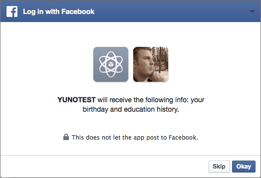

You can request as many permissions as you wish (that have been approved by Facebook) during the Login process, but in order to have your site make additional communications (such as publishing content from your site to the users' Facebook profiles, obtaining email addresses, etc) with Facebook, your users must manually grant permissions for your site.
The Set_Permissions tag allows to you create a button that lets your users do so. When clicked, it opens an Facebook dialogue box that prompts the current Facebook logged in user to allow the current site extended permissions.
Any permissions that have already been granted will be ignored in the process. If all of the permissions tied to this button have been granted for a given user, when the user clicks the button it will not load the modal window again (until there's a new permission to grant).
{exp:fbc:set_permissions}

Parameters
The following parameters are available for use:
button_label=
button_label="Set Facebook Permissions"
You can change the text label for the Facebook-style Permissions button with this parameter. The Set_Permissions template tag really just extends the Login tag, so the default value will be Log In if you don't specify a custom button label.
button_size=
button_size="medium"
This parameter allows you to change the size of the button. You can only choose from predetermined options from Facebook: small, medium, large, or xlarge.
permissions=
permissions="public_profile|email|user_friends|publish_actions"
This parameter allows you to provide a list of permissions (seperate with pipe character) to request from the user. Default permissions requested are: public_profile. Additionally available (without needing any manual review by Facebook) are email and user_friends. These are the main permissions you'll need as well, with the exception of publish_actions, which allows your users to publish data from your site onto their Facebook profile.
You can view the full list of permissions in the Facebook Permissions Documentation. Use the names mentioned in the User permission column.
If you intend on using/requesting any information other than public_profile, email and user_friends, you'll need to obtain permission manually from Facebook. For example, if you wish to allow users to publish content such as EE comments to the users' Facebook profile (publish_actions), you'll need to manually request permission from Facebook. You can learn more about How to Submit for Login Review (Facebook Developer Documentation) here.
Examples
Below is an example of how you would display a Facebook-style button in your template that allows a Facebook logged in user to allow more permissions to your site (will display as a button):
{exp:fbc:set_permissions
button_label="Set Facebook Permissions"
button_size="medium"
permissions="public_profile|email|user_friends|publish_actions"
}